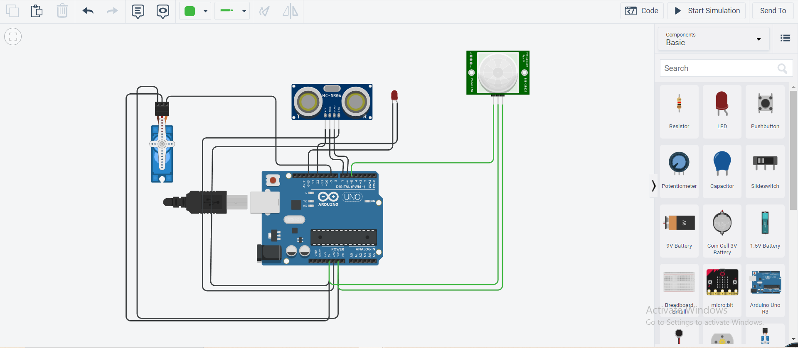

An Arduino-powered automatic dustbin that opens its lid the moment a hand or object is detected nearby — fully contactless, hygienic, and ideal for hospitals, kitchens, and public spaces.

The touchless smart dustbin uses two complementary sensors — an HC-SR04 ultrasonic distance sensor and a PIR passive infrared motion sensor — to reliably detect when someone approaches. When detected, a servo motor automatically opens the lid, holds it open while the person is present, then closes it after a configurable delay.
The dual-sensor approach reduces false triggers: the PIR detects gross motion, while the ultrasonic sensor confirms close proximity, ensuring the lid only opens when someone is actually about to use it.
The firmware implements a simple state machine: IDLE → DETECTED → OPEN → CLOSING. The PIR sensor wakes the system from low-power idle. The ultrasonic sensor then confirms the object is within the configured threshold (default: 30cm). If confirmed, the servo drives the lid open. The lid stays open as long as either sensor reports presence. After both sensors clear and the hold timer expires, the lid closes and the system returns to IDLE.